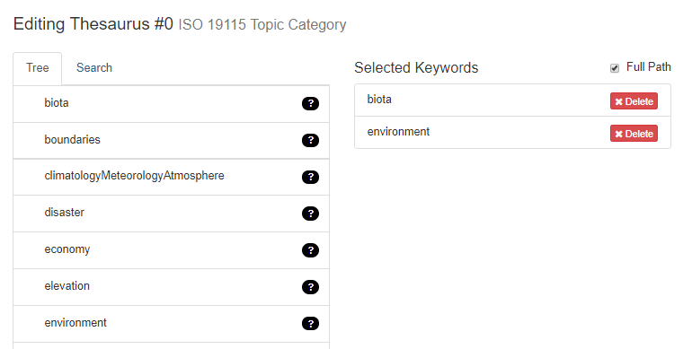
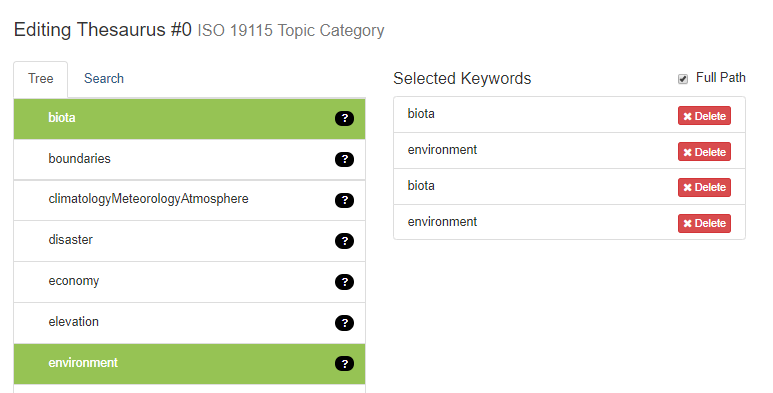
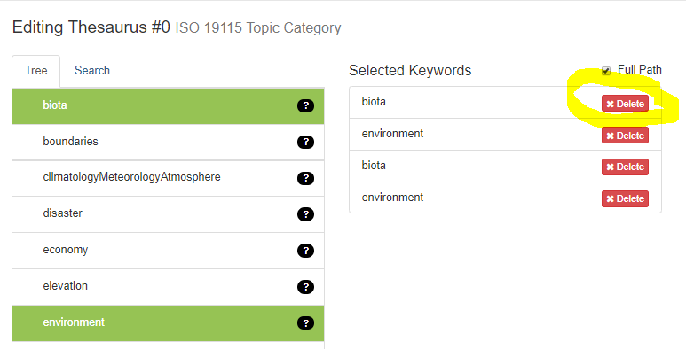
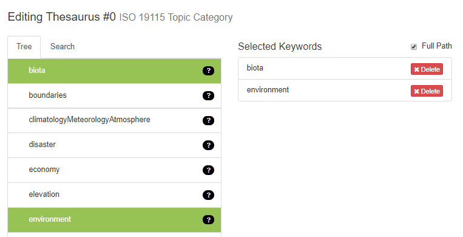

QA/QC Resources
There are several resources are your disposal for QA/QC of metadata. They are listed below with descriptions of what each tool can do.
Quick Links:
- ScienceBase Scanner: tool, guidance
- Automatic QA/QC Checks (from DJ Case): tool, guidance
- Manual QA/QC Checks (from ASG):
ScienceBase Scanner
Harvest Set Tag
The SB Scanner will show all of the Harvest Set tags you have in ScienceBase (called Metadata Repositories in mdEditor). The following warnings may be shown:
| Harvest Set Tag Warning | Definition |
|---|---|
| not valid LCC repository tag | Your Science Catalog tag is something other than “LCC Network Science Catalog” and needs to be fixed. See QA/QC Fixes for more info. |
| Warning: too many variants of data.gov tag. pick one and use it | You have more than one version of a data.gov tag (you must use only one version). See data.gov Metadata Repository tag for guidance. |
Warnings
The ScienceBase Scanner will produce the following warnings. These are not necessarily errors, particularly if you have items on ScienceBase that are not intended for inclusion in the Science Catalog and therefore do not follow the metadata requirements. These warnings will allow you to check your SB records to ensure you have met metadata requirements and make necessary updates and corrections.
Note: If you see a warning in the SB Scanner that isn’t listed here, please let Megan Cook (megan_cook@fws.gov) know to add to this list.
| Warning Type | Definition |
|---|---|
| no mdJSON file | There is no mdJSON attached to the SB Item. |
| no BudgetFacet | There is no Budget information included for an item marked as a Project. A project published from mdEditor will result in a BudgetFacet on SB. |
| no Project Category | There is no LCC Project Category Keyword selected (for a project). |
| no Deliverable | There is no LCC Deliverable Type Keyword selected (for a project). |
| ResourceType should be more specific than ‘product’ | Products in the Science Catalog need a specific Resource Type identified, not the generic “product.” |
| no ISO topic | There is no ISO Topic Keyword selected (for a project or product). |
| ResourceType should be ‘project’ | An item identified as “project” does not have “project” selected as its Resource Type. |
| no ScienceCatalog tag | The SB Item does not have the “LCC Network Science Catalog” metadata respository tag. |
| needs ResourceType | There is no Resource Type identified for the project or product. |
| bad repo tag | There is an error in the metadata repository tag for either the Science Catalog or data.gov. |
| No Summary | There is no Summary (aka Abstract) provided. |
| Short Summary | The Summary (aka Abstract) is only a few words long. |
Summary View
The summary view shows:
- All “Project” type items under their LCC community, grouped by the path on ScienceBase. Projects are shown in green.
- All items of any kind below that Project item. Products are light blue and other items are red/pink.
- The pink/red items could be:
- Intended Projects which are not marked as such yet
- Products which are not yet linked from their Project
- Organizational Folders beneath a project
- Any other products that are NOT located below the Project
- For each item, it will list the number of weblinks, and the number and type of file attachments.
A “[D]” added to the end of the title means that the item is marked as “Data”, and a “[P]” means marked as a “Publication.”
Note: Project items are those directly marked as such in ScienceBase via the browseType. Products are found via links from those Projects (i.e., a “Product” is an item linked from the Project as an Associated Item of “Produced” type).
Rescanning
Querying ScienceBase for all the items in a given Community is slow, so the SB scanner makes local copies of the query results, and drives the display of this tool from those local copies. You can see the time of the last scan for each community on the top page and on each community page.
If you have made changes in ScienceBase since then, you can requery ScienceBase using the “rescan” link at the end of the status line on the individual community pages (choose Summary on the top page, then read the top lines of the display).
Missing Keywords You Know Are Entered
There may be instances where you have added keywords for ISO Topic Category, LCC Project Category, LCC Deliverable Type, or LCC End User Type but the ScienceBase scanner is showing them as missing. This may have been an issue introduced for LCCs who used the template scripting (i.e., input metadata into a spreadsheet that Josh scripted into mdEditor to create your initial metadata records). Below is a possible way to check and solve that issue.
If you go into the Keywords section of your record, you may see that there are entries under “Selected Keywords” but those selections aren’t highlighted green in the tree of options.
Click on the desired options in the tree, which will add a duplicate set of those keywords in “Selected Keywords.” 
Delete the duplicate keywords from the top of the list. 
Now your keywords should be selected properly. You can re-publish and check the SB scanner again. 
Automatic QA/QC Checks from DJ Case
Link to Automatic QA/QC List from DJ Case
To aid in our metadata improvements, DJ Case created an automated QA/QC system of checks. This is a dynamic list of errors that will update when you fix an error and republish your record. Note that the updates will only when the Science Catalog itself updates, which occurs overnight.
Below are definitions of each issue described in the list:
| Warning Type | Definition |
|---|---|
| Allocation with unspecified recipient | One or more allocations in the metadata is missing a recipient. This is required. |
| Allocation with unspecified source | One or more allocations in the metadata is missing a source. This is required. |
| Allocation with recipient with unspecified contactType | One or more allocations in the metadata have a recipient contact that does not have “Contact Type” identified in the contact record. This is required. |
| Allocation with source with unspecified contactType | One or more allocations in the metadata have a source contact that does not have “Contact Type” identified in the contact record. This is required. |
| Allocation with no fiscal years identified | One or more allocations in the metadata is missing a fiscal year. This is required. |
| Allocation has a timePeriod spanning multiple fiscal years | One or more allocations in the metadata includes multiple fiscal years. There should be only a single fiscal year per allocation. |
| A responsible party has an invalid role (valid roles) | Invalid roles are likely leftover from items originally created on ScienceBase and then imported into mdEditor. You may not be able to see the erroneous roles unless you are in “View” mode for the mdEditor record, rather than in “Edit” mode. |
| An invalid resource type has been specified (valid types) | Invalid resource types are likely leftover from items originally created on ScienceBase and then imported into mdEditor. You may not be able to see the erroneous resource type unless you are in “View” mode for the mdEditor record, rather than in “Edit” mode. |
| Duplicate contact name | There are multiple unique Contact IDs in the mdJSON for the same “Contact Name.” |
| Funding source should be “U.S. Fish and Wildlife Service” | One or more allocations have identified a funding source that should be U.S. Fish and Wildlife Service. For example, the source may specify “Ecological Services” or the name of an LCC rather than “U.S. Fish and Wildlife Service.” |
Manual QA/QC Checks
Contacts Errors
DJ Case identified a list of errors in the Contacts during the initial creation of the Science Catalog. This is a static list of errors (i.e., it will not update when you fix an issue listed). The list contains a description of the contact error and the SBIDs for the records that contain that item.
Please update the “Fixed” column to “yes” when you have addressed a particular item.
Science Catalog Errors from Manual QA/QC from ASG
Link to Manual QA/QC List from ASG
This is a list of errors in the Science Catalog, as identified through manual QA/QC checks by the ASG. This is a living list that will be added to as other errors are identified.
Keyword typos are based on the records in the Science Catalog as of 10/22/18.
Once you have corrected the issue, please update the “Status” column to “Fixed.”